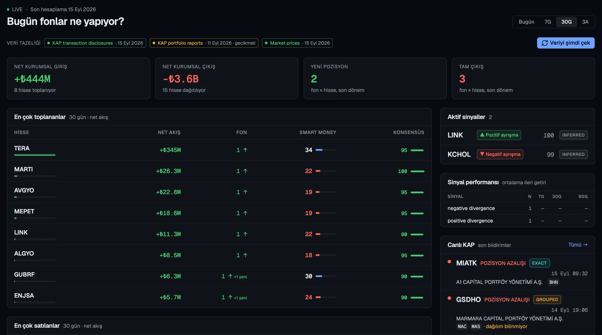

Track which stocks funds accumulate, reduce, enter and abandon — on one screen. Every number is traceable to its KAP or SEC source.

Not a price chart — money flow. Who bought, when, how much.
Fund share-transaction disclosures are normalised the moment they land: stock, institution, fund, lots, confidence.
Weekly/monthly fund portfolio reports are parsed; the diff between two reports becomes NEW / ADD / REDUCE / EXIT.
Breadth, net flow, persistence, new positions, conviction. Weights are open; click a score to see why.
Accumulation, distribution, positive/negative divergence (funds buying while price falls), new-position clusters.
Quarterly position changes of Berkshire, Bridgewater, Renaissance and others — same engine.
Claude writes a summary every morning; it never invents numbers, only uses what's in the tables. TR/EN, female/male voice.
From public disclosures, through a reproducible chain.
KAP and SEC EDGAR filings, fund portfolio PDFs, closing prices. The source id is kept on every row.
Every transaction gets a confidence level: Exact single fund, explicit amount; Grouped allocation unknown; Inferred derived from a report diff.
Position diffs, scores and signals are deterministic — same data, same result. Corrections supersede the original filing.
The AI layer only summarises computed data and shows its tool calls. Telegram, e-mail and phone notifications.